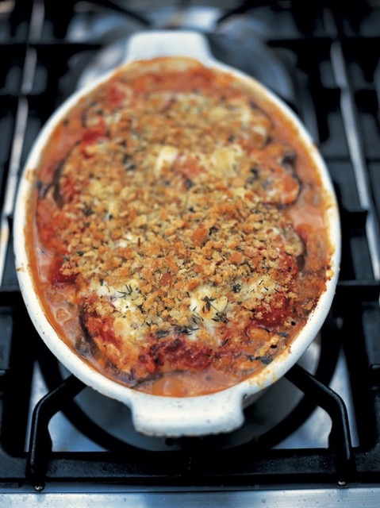

Parmigiana

Description
An old Italian comfort food classic, using aubergine, tomatoes, mozarella and, of course, parmesan.
Ingredients
- 2 cans of whole peeled plum tomatoes
- 2 large aubergines
- 2 cloves of garlic
- 1 carrot
- 1 onion
- 1 stick of celery
- 2 balls of mozarella
- Olive oil
- Block of parmesan
- Some basil leaves
Method
- Heat a decent amount of oil in largish pan
- Dice up the carrot, onion and celery, nice and small
- Brown in the pan, and when they're half way, add the garlic, crushed
- When it's all nicely browned, deglaze with some juice from one of the tomato cans
- Tip both cans of tomatoes in and simmer down, breaking up the fruit with a spoon
- Season to taste
- Once satisfied with the sauce, turn off the heat and let it sit for a bit
- Warm up a grill pan to high heat
- Slice the aubergines lengthways, approx .75 cm thick
- Salt the slices and brush with oil
- Grill them until soft and golden brown
- Heat up the oven to 200ish C
- Grate a bowl of parmesan and break up the mozarella balls into smallish pieces
- Wash and pick the basil leaves
- Layer up the dish, sauce, aubergine, parmesan, mozarella until used up, saving extra cheese for the top
- Try not to make it too wet, and add in basil leaves and generous amounts of black pepper as you go
- Put in the oven until golden brown on top, approx 25 minutes
- Serve with bread and salad